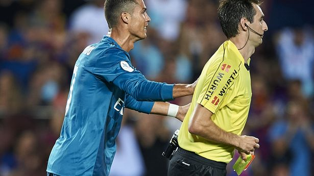

Shoving the Ref in the Spanish Super Cup
Background: On 13 August 2017, in the first leg of the Spanish Super Cup, Real Madrid travelled to face Barcelona at Camp Nou. With El Clásico at boiling point and Madrid having just won the 2016-17 La Liga and Champions League double, Ronaldo came off the bench and within 24 minutes produced the season's most controversial sequence — goal, dive, ref-shove — a treble that shocked football.
The dramatic three minutes: In the 78th minute Ronaldo nutmegged Piqué and crashed a left-footed shot into the net to put Real 2-1 up. Yet barely a minute later, after exaggerating his fall following contact with Umtiti in the box, referee Ricardo de Burgos Bengoetxea judged it a dive and showed him a second yellow card, sending him off. It was a rare straight dismissal for Ronaldo in El Clásico.
Shoving the referee: Furious at the call, Ronaldo, after being shown the red card, shoved referee De Burgos from behind with enough force to send the official stumbling forward. The physical confrontation was explicitly logged in the referee's post-match report: 'After being sent off, the player pushed me from behind, hard enough to unbalance me.' The act was egregious — a direct physical assault on a match official, far beyond ordinary protest.
Additional sanction: On 14 August 2017, the Spanish FA's competition committee announced its verdict: the red card itself carried a one-match ban, and shoving the referee added four more, totalling a five-match ban. Under FA rules, shoving a referee can draw four to twelve additional matches, so five sat in the relatively moderate range. Real appealed, but the Spanish appeals committee upheld the original ruling on 21 August.
Commentary: CCTV's 'Morning News' ran a special segment on the incident, stressing that 'physical contact with a referee, however slight, must be severely punished'. A Zhihu column argued: 'Ronaldo clearly shoved the referee and made him visibly feel it… even if not malicious, it's a foul.' Real fans felt the punishment was too harsh, while Barcelona fans felt shoving the referee should have drawn more. Former referee Luca Marelli and other experts widely agreed the five-match ban was justified and necessary.
Historical significance: This was the 11th red card of Ronaldo's Real Madrid career (across all competitions) and the most controversial — not only because he shoved a referee, but because it happened on the El Clásico stage. Compared to Messi picking up only a handful of red cards across 21 years at Barcelona, Ronaldo's discipline was once again under scrutiny. Madrid won the match 3-1 and lifted the Super Cup, but Ronaldo's impulsiveness cost them their biggest star at the start of the new season.